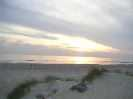
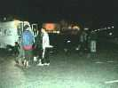
Ca ne manque pas, à 9 h du soir les fous commencent à arriver : les Pirates, les Gwenn-Ha-Du, les Pilotes de ligne, et déballent du matériel lourd pour pouvoir rouler et se défoncer. Ils déballent aussi pour pouvoir dormir dans les camions...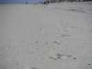
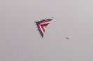
Et les cerfs-volants envahissent la plage, petit à petit tout au long de la matinée !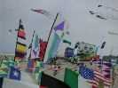
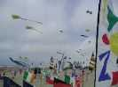
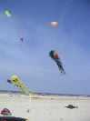
Il y a des CV de taille, comme les pieuvres, les flow-forms,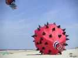
...un gros Fugu, de 5 ou 6 m de "diamètre" (il n'est pas vraiment sphérique, plutôt icosaédrique ?), mais ça doit être un Fugu des grandes profondeurs, sans yeux ni nageoires... Malheureusement il a fallu plier le bol qui arrachait de son trou le sac de sable de 200 kg qui servait d'ancrage.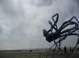
Une très grande pieuvre se bagarre contre les caprices du vent, en essayant de tout emporter dans ses tentacules (et y parvient parfois..)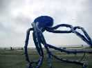
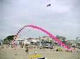
Au milieu du capharnaüm, une arche continue se maintient, d'abord aidée par une retenue centrale,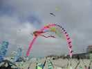
...puis complètement libre, ce qui représente une belle performance des créateurs et régleurs.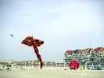
Une énorme raie de 40 m de long vole selon la météo, quelquefois en balayant tout sur son passage, bien que son créateur dégage progressivement la barrière, la première rangée de bannière, la deuxième, et refoule les baigneurs inconscients (mais Logos a résisté stoïquement à une chute de raie sur la tente, deuxième à droite sur la photo).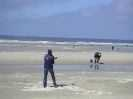
...Son créateur l'a réalisée tout seul, ce qui représente quelques kilomètres de couture et une gageure bien digne d'être saluée.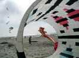
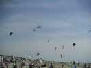
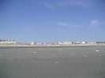
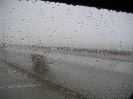